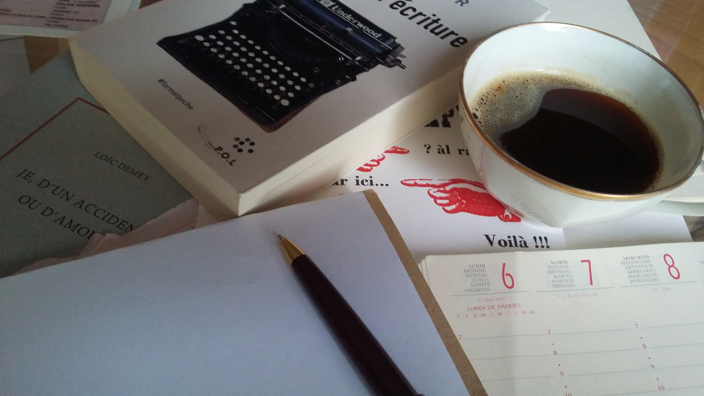
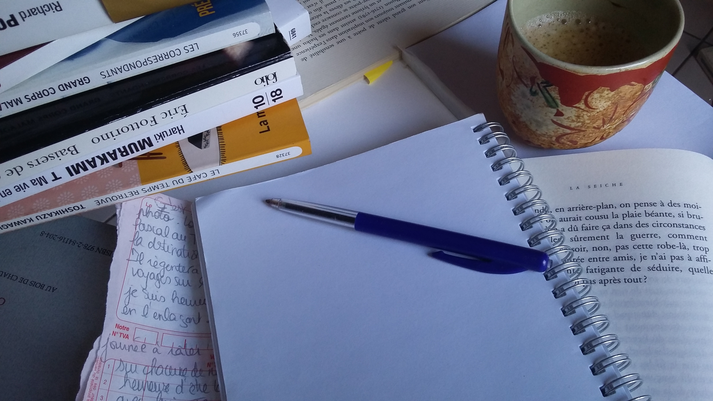
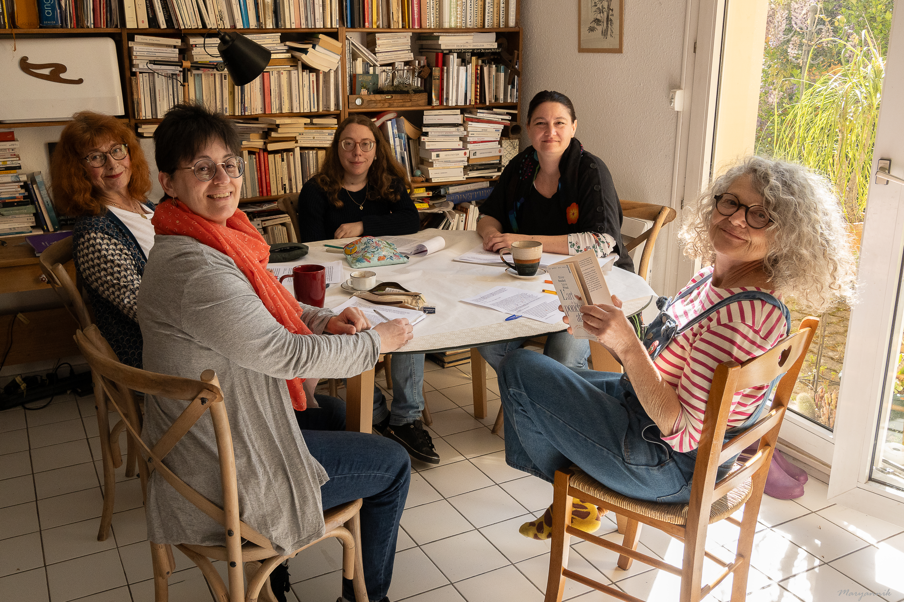
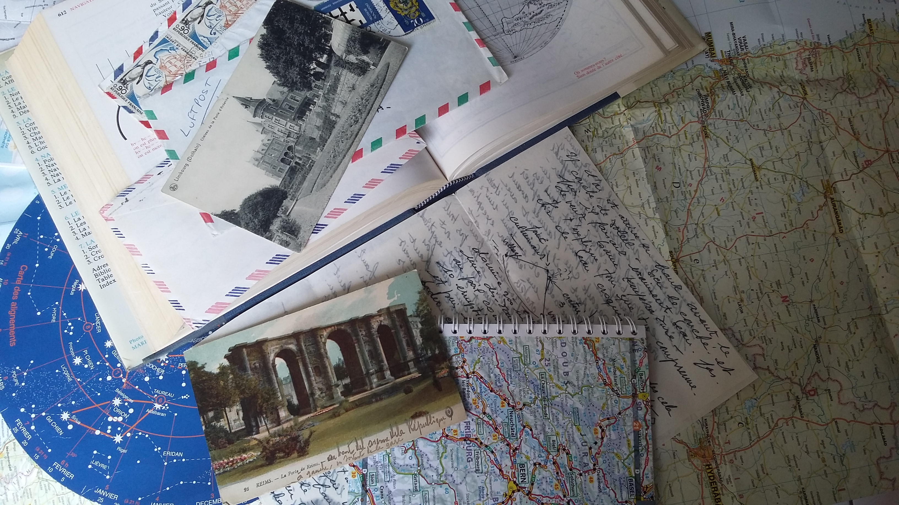
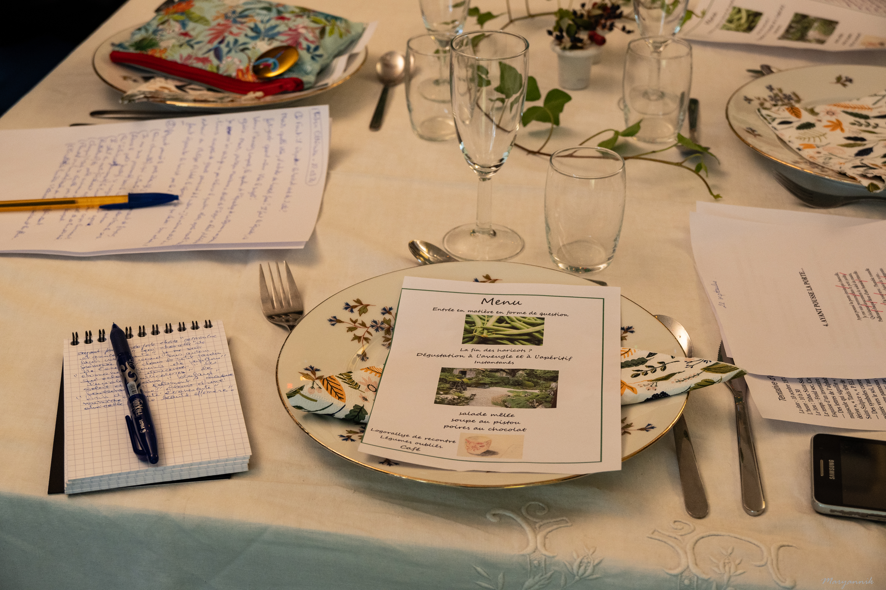

Démarches
Courrier et documents administratifs
- Courriers administratifs
- CV
- Lettre de motivation
Prestations
Démarches


Souvenirs et transmission
Tout peut s’imaginer : la biographie d’un parent dont vous voulez conserver les souvenirs, une page de vie significative dont vous souhaitez garder la trace, un récit de voyage, votre parcours personnel ou professionnel.
Une occasion particulière peut être le prétexte à l’édition d’un ouvrage dédié : mariage, anniversaire, départ à la retraite… Je peux intervenir depuis le recueil des témoignages jusqu’au livre imprimé. Il est aussi envisageable de construire la biographie d’une personne disparue ou une biographie familiale.

Relecture
Je relis, corrige et reformule vos textes — romans, thèses, mémoires, rapports — pour veiller à leur clarté, leur fluidité et leur niveau de langue, tout en respectant votre propos et votre style. J’apporte un regard extérieur, avec un autre point de vue, pour vous permettre de révéler ce que vous n’aviez pas encore exprimé.
Lorsqu’on répète un morceau de musique, le reprendre de la dernière mesure à la première lui donne parfois un autre éclairage.

Discours, notes, textes personnels
Certains textes doivent trouver leur équilibre entre émotion, naturel et précision : discours, hommages, éloges funèbres, notes, lettres personnelles ou messages délicats.
Si vous ne parvenez pas à mettre de l’ordre dans vos idées, je peux intervenir avec recul afin de vous aider à formuler votre pensée en termes appropriés.


Ateliers
Formes d’écriture variées : brèves, jeux inspirés de l’OuLiPo, récits, lettres, contes, fictions, souvenirs, écriture poétique… Les thèmes abordés et les objectifs sont conçus ou modifiés en fonction des participants.
Les contraintes permettent de s’élancer sur la page. La place est donnée à l’expression, sans jugement. La présence du groupe stimule l’imagination et la concentration.
On est invité à lire son texte à haute voix, sans aucune obligation. La variété des réponses apportées à une consigne crée un moment de partage parfois étonnant.
Un atelier peut être composé de deux à cinq plages d’écriture : échauffement, propositions courtes et une plus longue. Elles sont étayées par des textes issus de la littérature classique et contemporaine, de la poésie, du théâtre ou par tout autre écrit présentant un intérêt. Les séances sont indépendantes.

Animations sur mesure
À la demande, je peux proposer des ateliers sur des thèmes précis lors de diverses manifestations. J’anime aussi des repas littéraires, des ateliers-promenades, des ateliers-visites d’exposition, des ateliers d’anniversaire et d’autres formats imaginés avec les structures partenaires.
Tarifs sur devis
Le tarif dépend de la nature du texte, du volume, des délais et du niveau d’accompagnement souhaité.